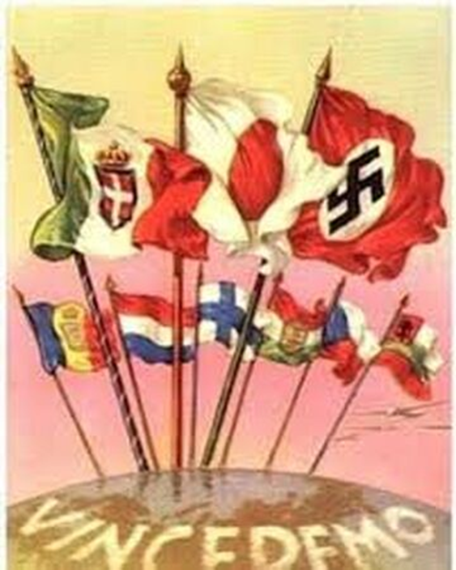

¿QUE BANDOS SE ENFRENTARON?
LAS POTENCIAS DEL EJE
Conducidas por la Alemania nazi, la Italia fascista y el Japón imperial, junto a sus socios y Estados títeres como Bulgaria, Hungría, Rumania, Finlandia, Tailandia, Eslovaquia, Serbia, Croacia, Irak y Albania. Esta alianza se formalizó con la firma del Pacto Antikomintern (1936-1937) y el Pacto Tripartito (1940).

LOS ALIADOS
Encabezados por Francia, el Reino Unido, Estados Unidos, la Unión Soviética y China, junto a otros países y gobiernos como Polonia, Noruega, Dinamarca, Bélgica, Luxemburgo, Países Bajos, Grecia, Yugoslavia, Canadá, Nueva Zelanda, Sudáfrica, Australia, el Raj británico y algunos países de participación minoritaria o apoyo diplomático.